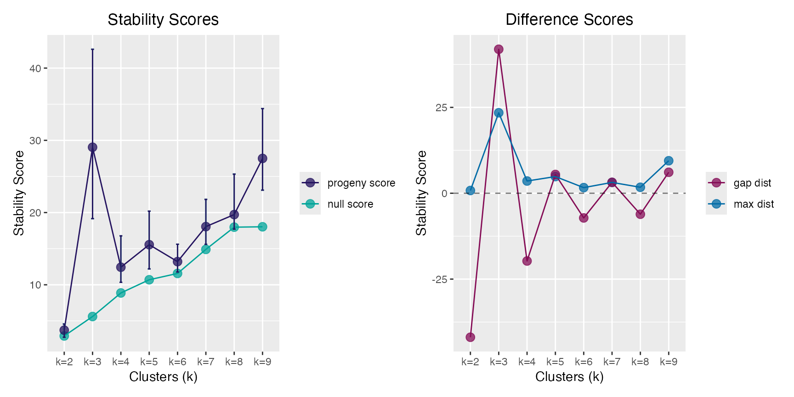

Progeny and Stability Clustering
progeny-clustering.RmdUseful functions:
-
progeny_cluster(): performs progeny clustering -
plot()andprint(): S3 methods for classpclust -
stability_cluster(): performs stability clustering
Progeny Clustering via progeny_cluster()
Select the optimal number for clustering using Progeny Clustering.
The “true” number of clusters in the progeny_data object is
3.
pc <- progeny_cluster(progeny_data, clust_iter = 2:9L,
repeats = 10L, n_iter = 25L, size = 6)
pc
#> ══ Progeny Clustering ═════════════════════════════════════════════════
#> • Call 'progeny_cluster(data = progeny_data, clust_iter = 2:9L, repeats = 10L, n_iter = 25L, size = 6)'
#> • Progeny Size 6
#> • K iterations '2 → 9'
#> • No. iterations 25
#> • No. repeats 10
#> ── Mean & CI95 Stability Scores ───────────────────────────────────────
#> k=2 ★k=3★ k=4 k=5 k=6 k=7 k=8 k=9
#> 2.5% 2.74 19.2 10.3 12.2 11.8 15.6 17.7 23.1
#> mean 3.72 29.0 12.4 15.6 13.2 18.1 19.7 27.5
#> 97.5% 4.58 42.6 16.8 20.2 15.6 21.8 25.3 34.4
#> ── Maximum Distance Scores ────────────────────────────────────────────
#> k=2 ★k=3★ k=4 k=5 k=6 k=7 k=8 k=9
#> 0.801 23.435 3.563 4.856 1.638 3.155 1.743 9.463
#> ── Gap Distance Scores ────────────────────────────────────────────────
#> k=2 ★k=3★ k=4 k=5 k=6 k=7 k=8 k=9
#> -41.93 41.93 -19.73 5.46 -7.19 3.18 -6.11 6.11
#> ═══════════════════════════════════════════════════════════════════════
plot(pc)
Stability Clustering via stability_cluster()
Partitioning Around Medoids (PAM) is used both because is uses a more
robust measurement of the cluster centers (medoids) and because this
implementation keeps the cluster labels consistent across runs, a key
feature in calculating the across run stability. This does not occur
using stats::kmeans() where the initial cluster labels are
arbitrarily assigned.
True clusters are:
- cluster 1 -> samples
1:50 - cluster 2 -> samples
51:100 - cluster 3 -> samples
101:150
stab_clust <- stability_cluster(progeny_data, k = 3L, n_iter = 750L,
r_seed = 999) |>
dplyr::mutate(true_cluster = rep(1:3L, each = 50L))
# 3-way confusion matrix
stab_clust |>
with(table(truth = true_cluster, predicted = prob_k))
#> predicted
#> truth 1 2 3
#> 1 49 1 0
#> 2 0 46 4
#> 3 1 1 48
# view incorrect clusters
stab_clust |>
dplyr::filter(true_cluster != prob_k)
#> # A tibble: 7 × 5
#> `k=1` `k=2` `k=3` prob_k true_cluster
#> <dbl> <dbl> <dbl> <int> <int>
#> 1 0.388 0.427 0.185 2 1
#> 2 0.175 0.353 0.472 3 2
#> 3 0.171 0.393 0.436 3 2
#> 4 0.188 0.403 0.409 3 2
#> 5 0.169 0.359 0.472 3 2
#> 6 0.197 0.419 0.384 2 3
#> 7 0.66 0.179 0.161 1 3References
Hu, CW, Kornblau, SM, Slater, JH and AA Qutub (2015). Progeny Clustering: A Method to Identify Biological Phenotypes. Scientific Reports, 5:12894. http://www.nature.com/articles/srep12894